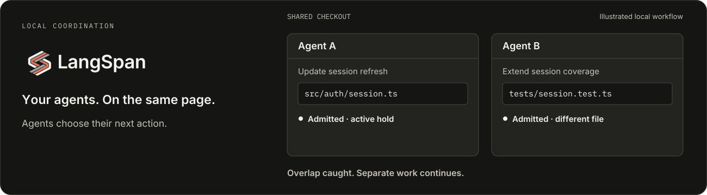
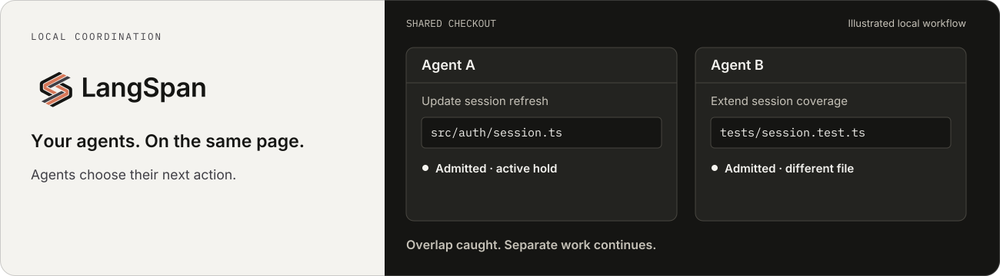
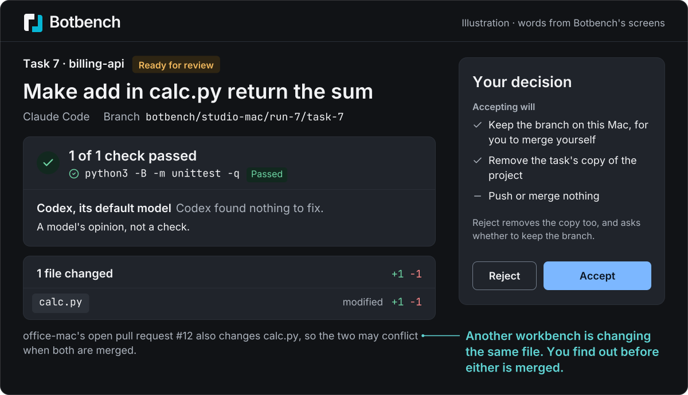
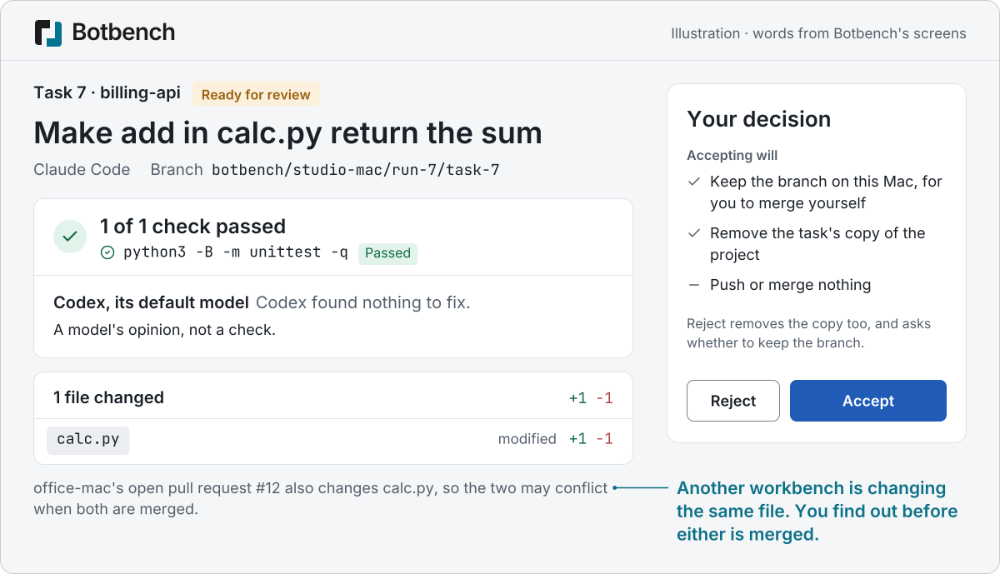

Click the skill to explore
$about
I build AI products and the systems that help teams ship them.
Senior Director, AI at Ripple Treasury. On my own time I build open-source tools for developers whose coding agents work side by side: LangSpan 0.1.0 and Botbench 0.3.2.
Currently building LangSpan/langspan
My work connects technical architecture, product judgment, and the way teams turn decisions into delivery.
I started in release automation, moved into cloud infrastructure and platform engineering, and kept finding that the hardest problems also involved people, priorities, and ownership.
The projects here are my independent work. I'm building LangSpan, the open-source coordination layer for parallel agentic development.
The professional storysrc/auth/session.ts
LangSpan admits the edit and holds the file for that session.
Command blocked by PreToolUse hook: LangSpan coordination conflict. … Choose other work or retry this edit later.
tests/session.test.ts
A different file, so the edit is admitted. Both keep working.
PRODUCTS / SYSTEMS / EXPLORATIONS
The product, the craft behind it, and the ideas still taking shape.


FLAGSHIP PRODUCTLangSpanOpen-source coordination for parallel coding agents, across sessions, worktrees and machines./langspan
 AGENT WORKBENCHBotbenchA local-first workbench: tasks on their own branches, your checks, a second opinion, your decision.
AGENT WORKBENCHBotbenchA local-first workbench: tasks on their own branches, your checks, a second opinion, your decision./botbench
 DESIGN SYSTEMA shared design languageTokens, components, and the details that make the product feel coherent.Explore
EXPERIMENTSQuestions worth tryingSmall exercises, explicit assumptions, and room to change my mind.
DESIGN SYSTEMA shared design languageTokens, components, and the details that make the product feel coherent.Explore
EXPERIMENTSQuestions worth tryingSmall exercises, explicit assumptions, and room to change my mind./lab
THE FLAGSHIP / INDEPENDENT PROJECT
Run agents in parallel. Build as a team.
Your agents. On the same page. LangSpan is the open-source coordination layer for parallel agentic development.
Worktrees isolate files, not intent. One agent can rename a function while another adds a caller using its old name. Git can merge both changes and the combined tests can still fail. Explore the clean-merge example.
One mechanism, step by step. For Claude Code and Codex in one checkout, LangSpan's hook refuses an edit that overlaps another session's hold, and says why. The agent decides what to do next.
An illustration, not a recording. The refusal is quoted from a recorded Codex run in LangSpan's evidence, shortened where marked with "…"; the files are the example langspan.dev uses.
LangSpan connects existing coding-agent sessions through relevant briefings, supported local edit checks, session ownership and exact-tree integration checks. It complements Git worktrees and keeps agent permissions intact. Opt-in Git metadata shares related activity across machines without publishing source contents.
Claude Code and Codex connect through their hooks; adapters for Cursor, Gemini CLI and Antigravity exist but are not yet verified in live sessions. People set direction and review the combined result. The goal is compatible parallel work with less manual relay and avoidable rework; that outcome still needs comparative evidence. Explore the illustrated 2, 6 and 10-session topology.
LangSpan v0.1.0 is available for macOS and Linux. The animation above is an authored illustration of supported local coordination.
INDEPENDENT PROJECT / AGENT WORKBENCH
Put your coding agents to work. Together.
One workbench for your agents. One coordination layer for your team. Hand a task to Claude Code or Codex, walk away, and come back to a branch with its checks, a second vendor's review, and your decision.
Each person keeps their own Mac, workbench and agents. Botbench tells you before your work collides, not when the second pull request opens.
office-mac's open pull request #12 also changes calc.py, so the two may conflict when both are merged.


Coordination is early. Pairing has been tested with two installations on one Mac, one pairing per installation, questions and answers only. Botbench is macOS only, built from source, and never merges a pull request.
Botbench 0.3.2, open source under Apache 2.0. The tour walks through recorded 0.3.0 screens.
IDEAS IN WORDS
Building is getting cheaper. Judgment still takes work.
AI made building cheaper.FROM MY WRITING
It didn't make waiting cheaper.
On shorter feedback loops, clear ownership, and the time between a question and evidence strong enough to act on.
A SMALL THOUGHT EXPERIMENT
Same five days. Move the feedback closer to the work.
Your first planned check comes on day 5.
An illustrative schedule, not measured results. More check-ins change when you can learn; the quality of the question still matters.
LET'S COMPARE NOTES
Building something interesting? Working through a knotty problem?
@jonathan-lange-ai-architectGitHubProjects and source@jon-langeXNotes along the way@langej117RUBBER DUCK DEBUGGING / HUMAN EDITION
What would change your mind?
A few useful questions from the Chief Question Officer.
A FEW WAYS IN
Click the skill. Pick something to explore.
Each skill opens a curated page about my work.